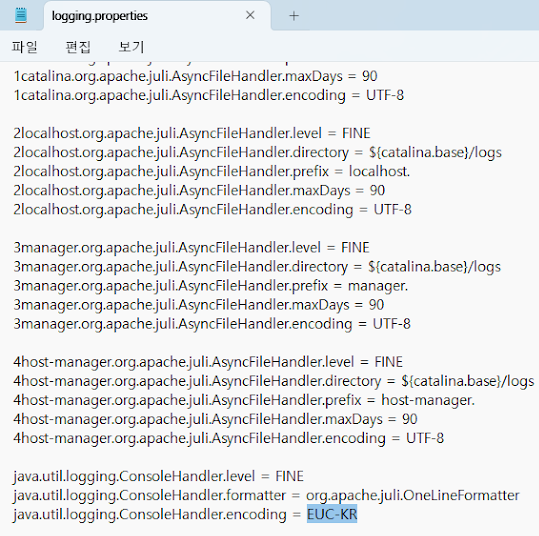
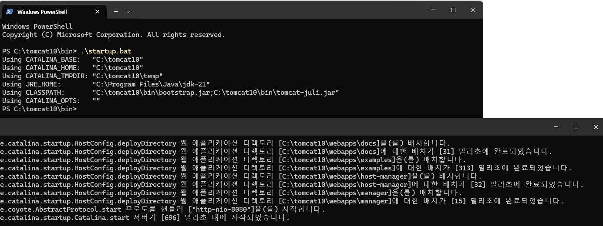

Setting up a Java development environment
Java
https://www.oracle.com/java/technologies/downloads

Run the JDK Installer.
You can complete the installation simply by clicking the Next button.
The installed JDK directory is C:\Program Files\Java\jdk-22.
Create the JAVA_HOME environment variable as follows:
Open Start
System
Advanced System Settings
Environment Variables(N)...
Under the "User variables for someson" section, click the New button.
Type JAVA_HOME in the "Variable name" setting.
Type C:\Program Files\Java\jdk-22 in the "Variable values" setting.
Click the OK button.
Click the OK button.
Run the command prompt as an administrator and execute echo %PATH% to confirm the JDK's bin path is in your Path.
C:\Windows\System32> echo %PATH% C:\Program Files\Common Files\Oracle\Java\javapath; C:\Windows\system32;C:\Windows; C:\Windows\System32\Wbem; C:\Windows\System32\WindowsPowerShell\v1.0\; C:\Windows\System32\OpenSSH\; C:\Program Files\Java\jdk-22\bin;
Maven
https://maven.apache.org/download.cgi
Download and unzip the latest binary version, copy the created directory to the location you want, and add Maven's bin path to the Path of the user variables.
mvn -v
Git
https://git-scm.com/download/win
Download 64-bit Git for Windows Setup.
You can complete the installation simply by clicking the Next button.
Add your name and email to your git config.
git config --global user.name "Jo Maso" git config --global user.email jo@gmail.org
Verify.
git config --global --list
GitHub CLI
Sign up at https://github.com.
Install the Windows version of gh while logged in.
Click Download for Windows on the https://cli.github.com page to download the msi file.
After installation, run gh auth login.
gh auth login
Select as below.
? What account do you want to log into? GitHub.com ? What is your preferred protocol for Git operations? HTTPS ? Authenticate Git with your GitHub credentials? Yes ? How would you like to authenticate GitHub CLI? Login with a web browser
Once you complete your selection, a one-time password will be added to the output.
! First copy your one-time code: one-time code - Press Enter to open github.com in your browser...

Copy the one-time password displayed in the command prompt and press Enter.
A web browser will launch and you will see a page where you can enter your password.
Paste the password displayed in the command prompt into the page.


Create a project to manage your examples on the https://github.com.


https://www.toptal.com/developers/gitignore
This site helps you create a .gitignore file.
In the site input box, type java to get hints for the .gitignore file of a typical Java project.
Click on the repository you created on the https://github.com.
Copy the address from the web browser address bar.
Paste the copied address after git clone at the command prompt and press Enter.
If the repository name is jwp2samples, a folder with the same name will be created.
After going to jwp2samples, open the README.md file and write as follows:
cd jwp2samples vi README.md
Java Web Programming 2 Samples ============================== ## A Bulletin Board Program with * Spring MVC * Spring Security * MyBatis Spring * Bean Validation * i18n * Thymeleaf ## How to run **mvn clean jetty:run**
Save your changes to your GitHub repository.
git add . -A git commit -m "first commit" git push
To follow a GitHub repository from another computer, run:
git fetch orign git reset --hard orgin/main
git Guide:
https://rogerdudler.github.io/git-guide/index.ko.html
Vim
https://www.vim.org/download.php
페이지에서 gvim_9.1.0_x64_signed.exe (64bit installer)를 내려받고,
모든 옵션을 디폴트로 선택해 설치합니다.
Vim 설치 폴더(C:\Program Files\Vim\vim91)를 환경 변수 Path에 추가합니다.
vim 명령 대신 vi를 사용하려면, 명령 프롬프트에서 다음을 실행합니다.
Set-Alias vi vim
Vim을 설치하면 명령 프롬프트에서, 유닉스와 리눅스에서 사용했던, 몇몇 유용한 명령을 실행할 수 있습니다.
명령 프롬프트를 실행하고 ctrl 키와 r를 동시에 누릅니다.
-- 이후부터 이 작업을 ctrl + r이라 표현하겠습니다--
한 줄 아래에서 bck-i-search: 다음에 사용자 입력을 기다립니다.
PS C:\Users\javaschool> bck-i-search: _
문자를 입력할 때마다 문자가 포함된 명령 히스토리를 보여줍니다.
엔터를 치면 명령이 실행됩니다. 또는 esc 키를 눌러 명령을 수정할 수 있습니다.
git r만 치면, 명령 히스토리에서 찾아 git reset --hard origin/main을 보여줍니다.
git reset --hard origin/main bck-i-search: git r
엔터를 치면 git reset --hard orgin/main이 실행됩니다.
윈도에 Vim을 설치한 이유는 리눅스의 몇몇 유용한 명령을 사용할 수 있고 간단한 문서 편집 작업을 위해서입니다.
윈도에서 문서 작성에 Vim만 사용하는 건 리눅스에서와 달리 무리입니다.
전문적인 문서 편집을 위해선 Notepad++을 추천합니다.
https://notepad-plus-plus.org/downloads/
자바 소스 편집을 위한 IDE로는 이클립스를 추천합니다.
https://www.eclipse.org/
Oracle
Oracle Database 11gR2 Express Edition--Express Edition을 XE라고 줄여 쓴다-- 윈도에 오라클 11g XE 설치
https://www.oracle.com/database/technologies/xe-prior-release-downloads.html
위 사이트를 방문해, 자신의 윈도 시스템에 맞는 Oracle Database 11gR2 Express Edition을 내려받는다. 오라클 웹사이트의 회원이 아니면 회원 가입을 하고 로그인해야 내려받을 수 있다.
윈도는 오라클이 지원하는 운영체제이니 오라클이 쉽게 설치된다. 압축을 풀고 Disk1 디렉터리에서 setup.exe를 실행한 후, 다음 버튼을 계속 눌러 설치할 수 있다. 설치 과정에서 관리자 계정의 비밀번호는 기억해야 한다.
윈도의 경우 오라클 설치 과정에서 오라클 XDB의 디폴트 포트 8080을 변경할 수 없다. 설치 후 XDB의 8080 포트를 9090으로 바꾸는 방법은 다음과 같다.
C:\Users> sqlplus Enter user-name: system Enter password: Connected. SQL> Exec DBMS_XDB.SETHTTPPORT(9090); PL/SQL procedure successfully completed. SQL>
C:\Users> sqlplus Enter user-name: system Enter password: Connected. SQL> @C:\oraclexe\app\oracle\product\11.2.0\server\rdbms\admin\scott.sql SQL>
Tomcat
https://tomcat.apache.org/download-10.cgi
페이지에서 10.1.xx 버전의 64-bit Windows zip을 내려받아 압축을 풀고,
생성된 폴더를 원하는 곳으로 옮깁니다.
폴더 이름 tomcat10처럼 쉬운 이름으로 바꿉니다. (예, C:\tomcat10)
bin 폴더에서 startup.bat를 실행하면 톰캣이 실행되고, shutdown.bat를 실행하면 종료됩니다.
C:\tomcat10\bin> .\startup.bat
startup.bat를 실행하면 새로운 명령 프롬프트창이 실행되면서 톰캣이 실행되는데, 이때 새 명령 프롬프트 창에서 글자가 깨져서 보입니다. 해결하려면, 톰캣 하위 폴더 conf/에서 logging.properties 파일을 열고 다음 줄의 인코딩 설정을 UTF-8 에서 EUC-KR로 변경합니다. 다음 실행부터 글자는 깨지지 않습니다.
java.util.logging.ConsoleHandler.encoding = EUC-KR

C:\tomcat10\bin> .\shutdown.bat
C:\tomcat10\bin> .\startup.bat
